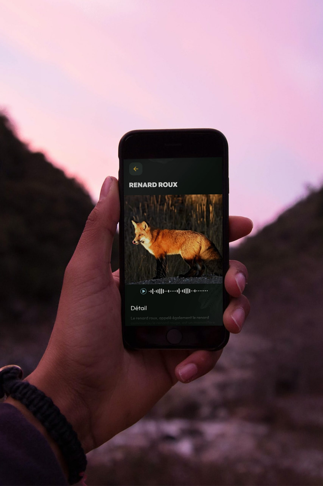
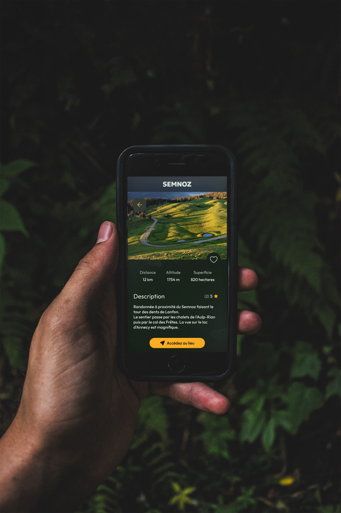
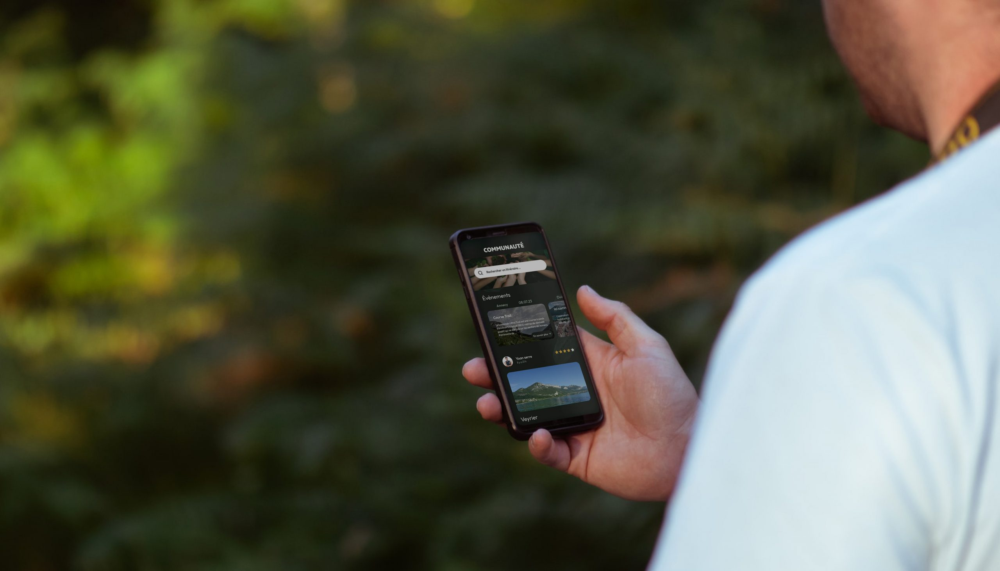
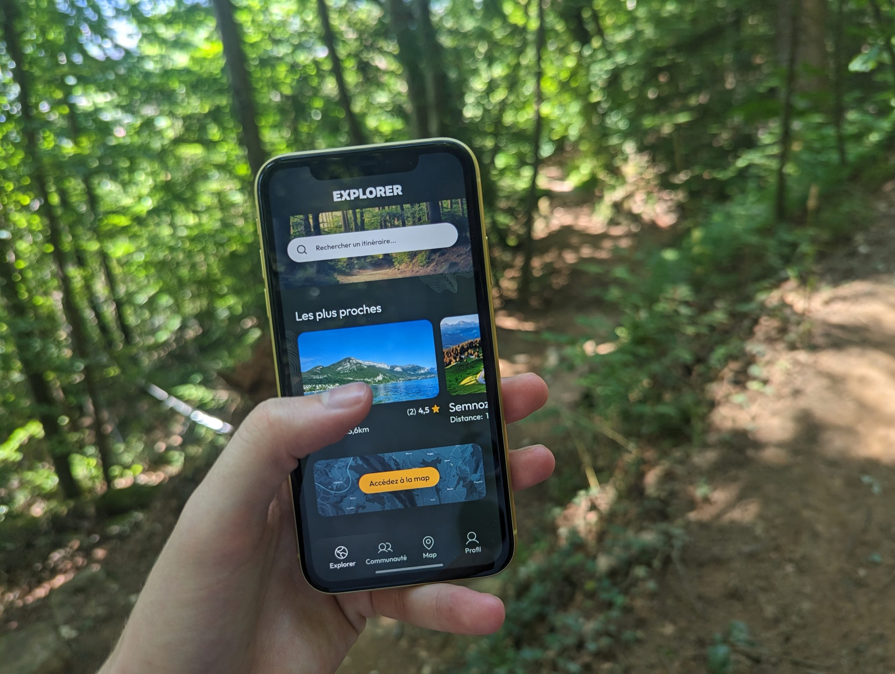

Concevoir une application qui réconcilie technologie et nature.
Vulpo est un projet de fin d'études réalisé en équipe — trois designers et un développeur. L'ambition : créer une application intuitive et immersive pour enrichir les expériences en pleine nature, que ce soit en randonnée, en forêt ou lors d'une simple promenade.
L'application repose sur un système de balises connectées positionnées dans les espaces naturels, qui transmettent en temps réel des informations sur la faune présente, les sentiers à explorer et les dangers à éviter. L'interface a été conçue pour être ergonomique, fluide et accessible à tous les profils d'utilisateurs.
Vulpo incarne une vision de la technologie au service du vivant : permettre aux gens de profiter de la nature en toute sérénité, tout en approfondissant leur connaissance des écosystèmes qui les entourent.


